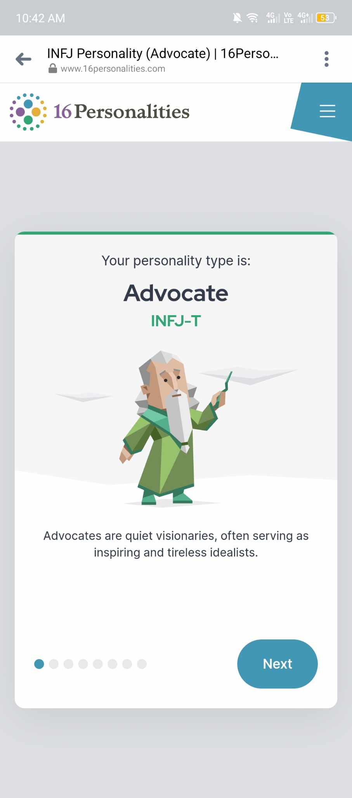
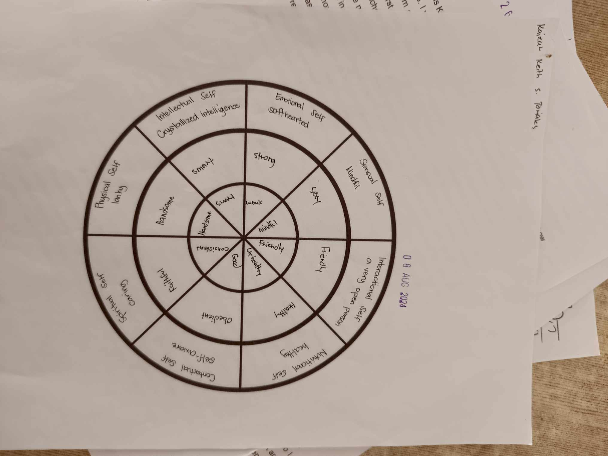
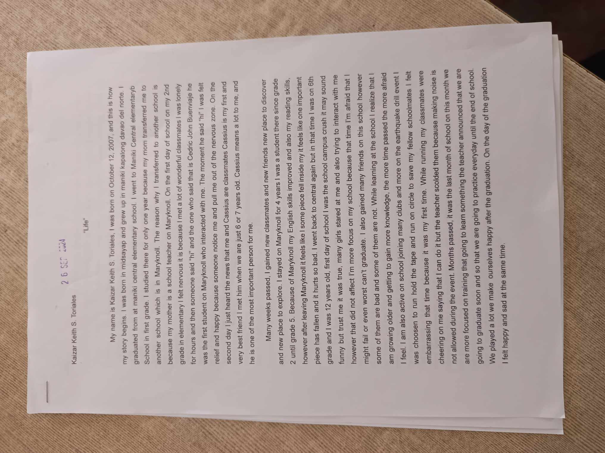

Welcome to my PerDev Blog.
MBTI Result
8 Segment Wheel
MMK Story
Recipe for Success
10 cups of confidence
10 cups of hope
10 cups of commitment
10 cups of determination
5 cups of faith
Success Story Roleplay
The Power Triad
How aware are you of the two different opposing "wolves" Operating within your mind. One of which leads to pain and a diminished sense of life and the other a joyous, meaningful, and fulfilling life?
Ans: I'm 100 percent aware that i have a two different wolves operating my mind one of them leads to pain and the other one leads to a fullfiling life.
• When was the time you feel dissapointed by the choice of behavior because you knew that there was a more positive option but you just didn't choose it?
ANS: That time when i choose my friends over my girlfriend.
•The techniques that i use is to find a new may to make myself happy.
• The specific way to feed my negative wolf is when the time I'm feeling sad
• The specific way to feed my positive wolf is when the time I'm feeling happy